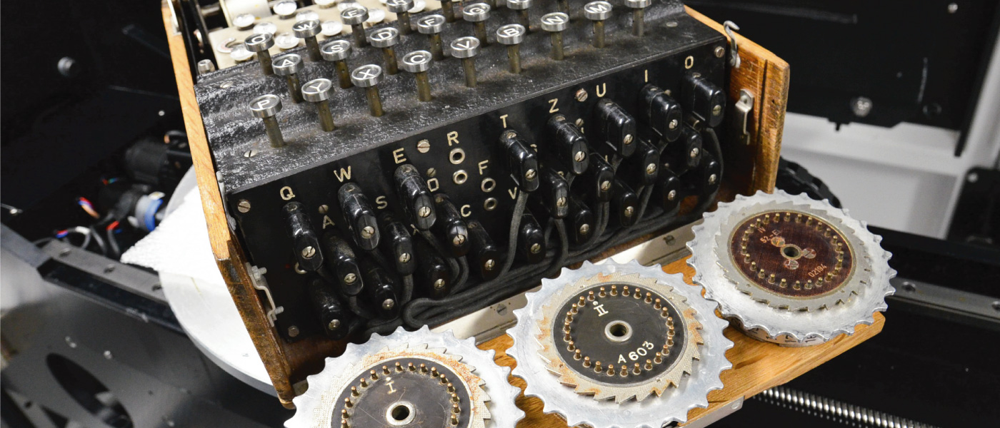

Introduction to Systems of Equations and Inequalities

At the start of the Second World War, British military and intelligence officers recognized that defeating Nazi Germany would require the Allies to know what the enemy was planning. This task was complicated by the fact that the German military transmitted all of its communications through a presumably uncrackable code created by a machine called Enigma. The Germans had been encoding their messages with this machine since the early 1930s, and were so confident in its security that they used it for everyday military communications as well as highly important strategic messages. Concerned about the increasing military threat, other European nations began working to decipher the Enigma codes. Poland was the first country to make significant advances when it trained and recruited a new group of codebreakers: math students from Poznań University. With the help of intelligence obtained by French spies, Polish mathematicians, led by Marian Rejewski, were able to decipher initial codes and later to understand the wiring of the machines; eventually they create replicas. However, the German military eventually increased the complexity of the machines by adding additional rotors, requiring a new method of decryption.
The machine attached letters on a keyboard to three, four, or five rotors (depending on the version), each with 26 starting positions that could be set prior to encoding; a decryption code (called a cipher key) essentially conveyed these settings to the message recipient, and allowed people to interpret the message using another Enigma machine. Even with the simpler three-rotor scrambler, there were 17,576 different combinations of starting positions (26 x 26 x 26); plus the machine had numerous other methods of introducing variation. Not long after the war started, the British recruited a team of brilliant codebreakers to crack the Enigma code. The codebreakers, led by Alan Turing, used what they knew about the Enigma machine to build a mechanical computer that could crack the code. And that knowledge of what the Germans were planning proved to be a key part of the ultimate Allied victory of Nazi Germany in 1945.
The Enigma is perhaps the most famous cryptographic device ever known. It stands as an example of the pivotal role cryptography has played in society. Now, technology has moved cryptanalysis to the digital world.
Many ciphers are designed using invertible matrices as the method of message transference, as finding the inverse of a matrix is generally part of the process of decoding. In addition to knowing the matrix and its inverse, the receiver must also know the key that, when used with the matrix inverse, will allow the message to be read.
In this chapter, we will investigate matrices and their inverses, and various ways to use matrices to solve systems of equations. First, however, we will study systems of equations on their own: linear and nonlinear, and then partial fractions. We will not be breaking any secret codes here, but we will lay the foundation for future courses.